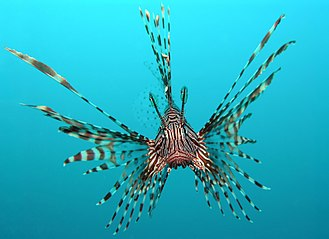

Dogs

Dogs (Canis lupus familiaris) are domesticated mammals, not natural wild animals. They were originally bred from wolves. They have been bred by humans for a long time, and were the first animals ever to be domesticated. There are different studies that suggest that this happened between 15.000 and 100.000 years before our time. (https://simple.wikipedia.org/wiki/Dog)
Cats

Cats, also called domestic cats (Felis catus), are small, carnivorous mammals, of the family Felidae.[3][4] Domestic cats are often called 'house cats' when kept as indoor pets.[5] Cats have been domesticated (tamed) for nearly 10,000 years.[6] They are one of the most popular pets in the world. They are kept by humans for hunting rodents and as companions. There are also farm cats, which are kept on farms to keep rodents away; and feral cats, which are domestic cats that live away from humans. (https://simple.wikipedia.org/wiki/Cat)
Fish
Fish are aquatic, craniate, gill-bearing animals that lack limbs with digits. Included in this definition are the living hagfish, lampreys, and cartilaginous and bony fish as well as various extinct related groups. Around 99% of living fish species are ray-finned fish, belonging to the class Actinopterygii, with over 95% belonging to the teleost subgrouping. (https://en.wikipedia.org/wiki/Fish)